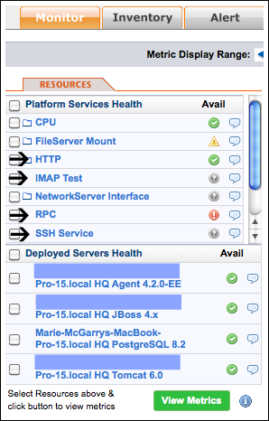

|
vFabric Hyperic 4.6.5 : Network Platform Services
This page last changed on Jan 04, 2012 by mmcgarry.
Topics marked with * relate to features available only in vFabric Hyperic. Hyperic Network Service Monitoring CapabilitiesA Hyperic Agent can monitor a variety of remote services over the network. To enable monitoring of a service on the network, you configure a platform service on an operating system platform. The platform service you configure is a proxy for the remote service - in the HQ user interface, the remote service appears as a "child" of the platform whose agent monitors it. For information about how different sorts of managed resources map to a resource hierarchy in HQ, see Resources, Resource Types and Inventory Types. The screenshot below lists the platform services on a selected platform. The resources marked with an arrow are network services that have been configured as platform services on the platform. The network services on the plaform include multiple HTTP services, an IMAP service, an RPC service, and an SSH service. The resource named "HTTP" is an autogroup that represents all of the HTTP services configured on the platform. (HQ's autogrouping behavior is described in [Resources, Resource Types and Inventory Types.) The other platform services in the list are local services (CPUs, FileServer Mounts, and NetworkServer Interfaces) that the agent auto-discovered. The availability of each network service, and each autogroup of network services, is indicated by an icon:
 Configuration Requirements and Options for Monitoring Network ServicesConfiguration requirements vary by the type of network service you wish to monitor. At a minimum you must configure the location of the network resource, and depending on the resource, you may also need to supply the credentials required to access it. You can optionally configure event tracking for any type of network service that Hyperic monitors. If you do, the agent will log an event for responses that match the criteria you specify. You can define alert conditions based on events logged for remote service, just as you can for managed resources on the same platform as the agent. Metrics for Network ServicesThe metrics reported for a remote service varies by type.
Classes for Monitoring a Network ServiceMost network services are monitored by classes in Hyperic's netservices plugin. (Notable exception: if you monitor a remote SNMP agent, Hyperic's SNMPMeasurementPlugin performs most of the metric collection.) Services Hyperic Can Monitor Over the Network
|
| Document generated by Confluence on Jan 20, 2012 10:07 |